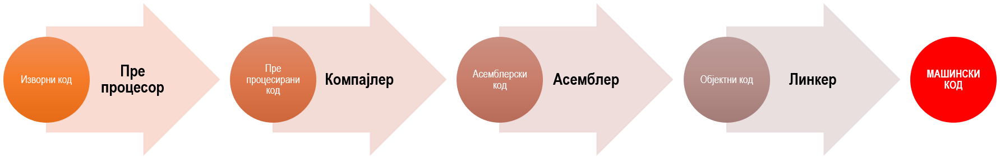

Од изворног кода до извршног програма¶
У претходној лекцији видео си да је у интегрисаном развојном окружењу Visual Studio процес превођења изворног кода написаног у програмском језику C у извршни програм, односно апликацију, потпуно аутоматизован.
Процес превођења изворног кода у извршни програм можеш посматрати кроз четири корака:
препроцесирање (енгл. preprocessing),
компајлирање (енгл. compilation),
монтажа (енгл. assembly) и
повезивање (енгл. linking).
У њима учествују редом препроцесор, компајлер, асемблер и линкер.
Прво се позива препроцесор (енгл. preprocessor) који претражује изворни
кôд тражећи препроцесорске наредбе. Свака линија изворног кода која почиње
знаком # представља једну препроцесорску наредбу. На основу резултата,
препроцесорске наредбе замењују се одговарајућим програмским кодом. На излазу
се добија фајл са препроцесираним кодом који може да има екстензију .i.
Фајл са препроцесираним кодом преузима компајлер (енгл. compiler) који га
преводи у фајл са асемблерским кодом који може да има екстензију .s.
Фајл са асемблерским кодом преузима асемблер (енгл. assembler) који га
преводи у објектни фајл. Објектни фајл може да има екстензију .o или .out.
На крају, објектни фајл преузима линкер (енгл. linker) који на основу
објектног кода врши повезивање са другим објектним кодовима (из библиотека или
других објектних фајлова), па на крају генерише фајл са машинским кодом.
Фајл са машинским кодом је извршни фајл, што значи да се може покренути,
односно извршити у оперативном систему. Извршни фајлови у оперативном систему
Windows имају екстензију .exe (енгл. executable), док у оперативним
системима UNIX и Linux извршни фајлови немају екстензију.
Цео процес се може визуелно представити следећим дијаграмом:
{kind=link}